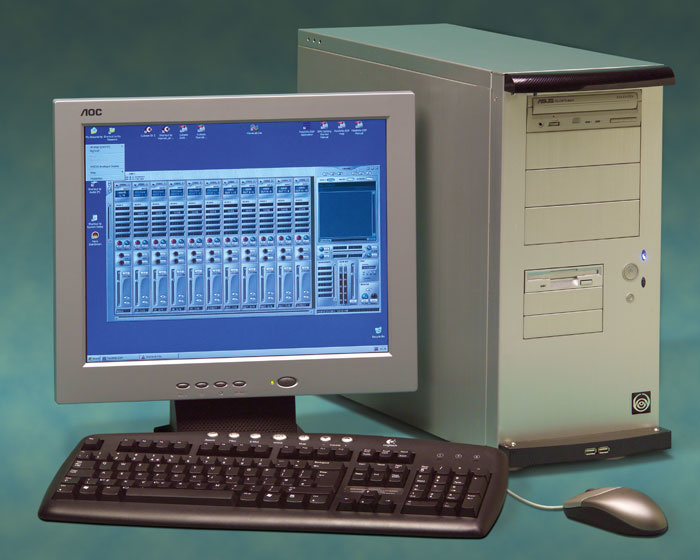
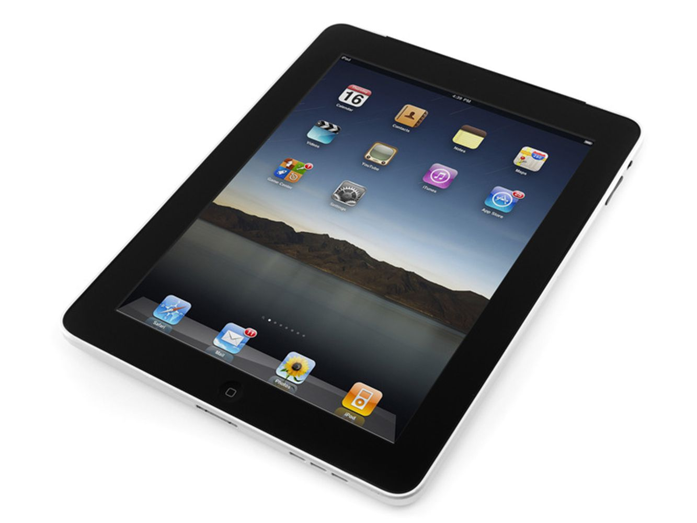

Calculatoarele din a cincea generatie
1980-Prezent
Tehnolgia care defineste aceasta generatie de calculatoare este inteligenta artificiala care permite utilizatorilor sa utilizeze calculatorul intr-un mod mai simplu, natural si uman.

Inteligenta artificiala este folosita pentru: recunoasterea vocala, procesarea de limbaj natural, machine-learning, computer-vision, sisteme automatizate etc.
In aceasta era este utilizata si procesarea paralela care permite ca multiple computatii sa fie realizate simultan. Acest lucru duce la o eficienta si viteza sporita fata de generatia anterioara.
Limbajele de programare sunt si mai usor de utilizat si mai folositoare. Cateva exemple din cele mai utilizate limbaje de programare sunt: C/C++, Java, Python etc.
Aceasta generatie este marcata si de accesibilitatea calculatoarelor, oferind o gama larga de dimensiuni si forme pentru nevoile si preferintele utilizatorilor.
Exemple de calculatoare din aceasta generatie:
- Desktop 
- Laptop
- Tableta 
- Smartphone

Principalele caracteristici ale acestei generatii:
| Caracteristica | Componenta |
|---|---|
| Principala componenta electronica | Microprocesorul |
| Limbajul de programre | Limbaje high-level, Limbaj uman (AI) |
| Marime | Diverse optiuni |
| Dispozitive I/O | Trackpad, touchscreen, scanner, imprimanta, mouse, tastaura, monitor etc. |